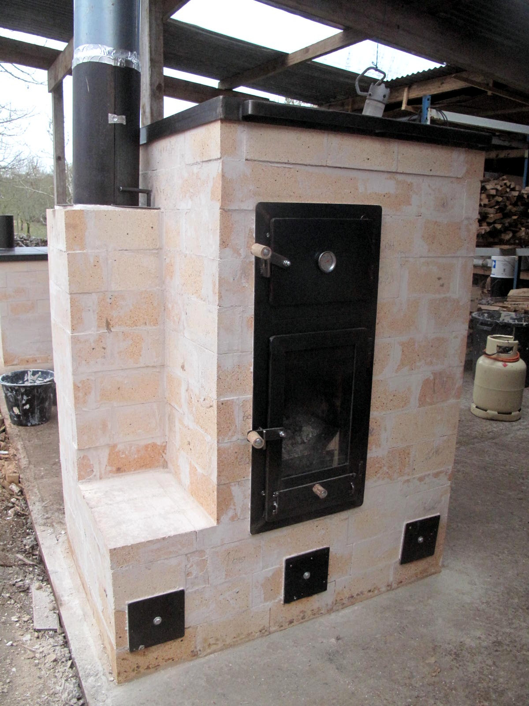

Session Batch 2018
Plan
Le principe
Le principe était de réunir une quinzaine de pyromanes expérimentés (professionnels ou non) autour des Batchrockets et des poêles de masse. Les objectifs étaient de tester de nouveaux foyers, de nouveaux systèmes de récupération de chaleur, échanger sur les nouvelles techniques et les bonnes pratiques.
Plusieurs poêles développés par l'association UZUME ont été montés et testés.

Les participants:
- Christophe Glaziou - Poêlier, associations UZUME et Les Outils de l'Autonomie (organisation)
- Yasin Gach - Poêlier, association UZUME (organisation)
- Guinevere S., association UZUME (organisation)
- Sylvie G. (organisation)
- Myriam C. (organisation)
- Yann Bleuze, Atypique Charpentes
- Guillaume Augais, association Atelier du soleil et du vent
- Karin Ducander
- Benoit Rouault - Poêlier, contact
- Vital Bies - Poêlier, MVHabitation, association Dès 2 mains, AFPMA, co-auteur du livre Poêles à accumulation : Le meilleur du chauffage au bois
- Elios
- Eduardo Marquina - Poêlier, Espagne, Estufas de inercia
- Daan Haasevoets - Poêlier, association Feu Follet
- Peter van den Berg - Poêlier, Pays-Bas, concepteur des Batchrockets, Batchrocket.eu
- Sébastien Georgel - Poêlier, formateur pour l'association Oxalis
Les résultats de ce travail que vous trouverez sur cette page et sur ce site sont distribués librement, sous une licence open-source CC BY-SA 4.0 : vous êtes libres de partager, d'utiliser, de transformer ce travail, même pour une utilisation commerciale tant que vous citez les auteurs originaux et que vous partagez les résultats de votre travail sous les mêmes conditions. Dans notre cas, l'auteur original est Peter Van Den Berg.
Attention ! La construction d'un poêle de masse implique de nombreuses compétences et, bien que nous tentions de fournir les informations les plus claires possibles, nous ne pouvons garantir la réussite de votre construction. Nous ne donc saurions être tenus responsables de tout dommage, matériel ou immatériel causé à vous ou à vos équipements.
Nous remerçions chaleureusement toute l'équipe de bénévoles pour leur travail et l'énergie qu'ils ont apporté.
Nous remerçions chaleureusement aussi la briquetterie PRSE (Produits Réfractaires du Sud Est) pour la fourniture de la matière première et pour son soutien.
Nous remerçions aussi l'éco-maison de Varaire (Sébastien Georgel, Élisabeth Eisenmann) pour son accueil et la mise à disposition du lieu pour la semaine. L'éco-maison de Varaire (46260, Lot) est un centre de formation sur la rénovation écologique du bâti ancien. Nous y organiserons nos prochains stages de formation à l'auto-construction de poêles de masse Batchrocket.
Un autre compte rendu a été écrit sur cette semaine de développement par notre collègue et ami Eduardo Marquina : estufasdeinercia.wordpress.com/2018/02/01/session-batch-francia-enero-2018/
Le nouveau coeur de chauffe
Un nouveau coeur de chauffe basé sur le Batchrocket avait été testé, modifié, testé de nouveau, etc. pendant le mois de Décembre 2017. Le développement initial a été publié sur le forum anglais de développement : donkey32.proboards.com/thread/2383/batch-cookstove-small-riser.
Nous avions observé que le double vortex se formait uniquement dans la partie basse de la cheminée interne du Batchrocket, ce qui signifie que la plus grande partie des turbulences y étaient confinées.
L'idée de base de ce coeur de chauffe est donc de créer un vortex plus turbulent en partie basse du turbuleur pour réduire la hauteur du coeur de chauffe, ce qui permet de faire des poêles de masse plus petits. Au dessus du turbuleur se trouve une petite cloche qui permet la fin du mélange des hydrocarbures issus de la pyrolyse du bois et de l'oxygène. Cette petite cloche encaisse aussi les chocs thermiques les plus violents et préserve les autres parties du poêle de masse.
Les résultats de combustion ont été présentés durant la Session Batch 2018 et de nouveaux modèles basés sur ce coeur de chauffe ont été construits et testés.


Vues du plan 3D du nouveau coeur de chauffe basé sur le Batchrocket. Source : Association UZUME
Le plan en 3D avec le logiciel Sketchup Make (logiciel gratuit à télécharger sur cette page) est disponible sur ces liens :
- coeur_de_chauffe_batchrocket_020218.skp (Sketchup Make V2016 ou supérieure)
- coeur_de_chauffe_batchrocket_020218.skp (Sketchup Make V8)
Ce coeur de chauffe est distribué avec un manuel d'utilisation : Manuel_utilisation_batchrocket_012818.pdf
Concernant la combustion : Les analyses faites depuis le mois de Décembre 2017 montre que ce coeur de chauffe brûle très bien. Les résultats moyens avaient été autour de 800 ppm à 13% d'O2 (3,7 fois sous la norme de pollution des poêles
de masse, rendement de combustion moyen de 97,4%) avec un feu stable (pas d'emballement) jusqu'à 8,5% d'O2.
Les poêles testés et les modifications faites pendant la Session Batch 2018 nous font penser qu'à présent les résultats sont encore
meilleurs, mais nous manquons d'analyses pour montrer que ces résultats de combustions peuvent être obtenus à chaque flambée. De nouveaux tests sont programmés pour bientôt !
Il s'agit d'un travail collaboratif : le turbuleur en forme de demi-octogne puis carré est une idée de Peter van den Berg, le développement principal a été effectué par l'association UZUME en se basant sur le Batchrocket et sur l'aide et les travaux prééxistants de pyromanes du monde entier. À ce titre, ce coeur de chauffe est distribué sous une licence open-source CC BY-SA 4.0. Merci de bien lire les termes de la licence.
Ci-dessous quelques photos de ce coeur de chauffe dans la cuisinière de masse. Une des planchas a été retirée et le coeur de chauffe a continué de brûler normalement, malgré le manque de tirage lié à l'ouverture béante juste au dessus du turbuleur. Aucune fumée n'était visible !

Le double vortex dans le turbuleur. Les flammes sont très chaotiques dans cette configuration, ce qui est excellent pour le mélange hydrocarbures et de l'oxygène préchauffé.
Les joints céramiques blancs sont là pour les tests de combustion.
Ils ne sont pas là en temps normal.
Source : Karin Ducander
Les poêles à bois testés
1. Une cuisinière de masse
Il s'agit d'une cuisinière de masse qui brûle 8 kg de bois par flambée. Polyvalente et compacte, elle permet à la fois de chauffer un espace conséquent (3700W avec 3 flambées par jour), de cuisiner sur la plancha ou dans le four, de sécher des fruits et légumes, d'avoir une bouilloire avec de l'eau chaude, etc..
Il s'agit de la troisième version de notre cuisinière de masse. La première cuisinière ayant été construite en Juin 2016 et la deuxième en Novembre 2017. Suite à cette 3ème version, une 4ème est en cours de tests.
La plancha lui permet de chauffer plus rapidement le volume à chauffer, de ne pas saturer les briques en chaleur et de cuisiner.. mais en contrepartie la part de chauffage par convection est augmentée.
Les objectifs :
- Cuisson dans un four noir et sur la plancha;
- Métallerie indépendante de la maçonnerie;
- Conduit de raccordement en 150 mm;
- Principe de cloche dans cloche pour une grande résistance structurelle;
- Tout le poêle est accessible pour le nettoyage et l'entretien;
- Les briques isolantes dans le turbuleur sont montées à sec et facilement remplaçables. On peut aussi utiliser des briques réfractaires non isolantes à la place;
- Poids total inférieur à 1000 kg;
- Coût en matériaux livrés inférieur à 1200€;
- Hauteur finale inférieure à 90 cm;
- Rendement de combustion autour de 98% (soit 500ppm de CO moyen à 13% d'O2, six fois en dessous de la norme);
- Feu stable jusqu'à 7,0 % d'O2;
- Rendement total (combustion x récupération) supérieur à 80%;
- 4 flambées par jour sans perte notable de rendement;
- Pas de chauffage d'eau chaude sanitaire;
Quelques photos de la cuisinière de masse V3 :
La troisième version de la cuisinière de masse après la semaine de tests. Source : Association UZUME
Les plans de la version testée pendant la session batch :
Le plan en 3D avec le logiciel Sketchup Make (logiciel gratuit à télécharger sur cette page) est disponible sur ce lien : C_8kg_V3-1_012018.skp (Sketchup Make V2016 ou supérieure)

Différentes vues du modèle 3D de la cuisinière de masse V3. La cuisinière fait 720 mm de profondeur, mais le cadre de la plancha est un peu plus grand, 750 mm de profondeur. Source : Association UZUME
Les résultats de la version testée pendant la session batch :
Concernant la solidité :
- La partie gauche du poêle, juste après l'ouverture de la cloche du coeur de chauffe, subit un stress thermique important.
- Les planchas subissent de gros chocs thermiques sans flamber. Lors des tests, il a été mesuré qu'au même moment, les 4 planchas avaient des températures respectives de 650, 450, 250 et 150 °C. Le fait qu'il y ait 4 planchas à la place d'une seule (comme sur la V2) permet bien d'empêcher le flambement.
- Le support des planchas ne doit pas être soudé au cadre des planchas, sinon ça flambe !
- Mieux vaut que le coeur de chauffe soit maçonné contre la peau extérieure avec un joint de dilatation (du carton) entre les deux. Sinon il doit être maçonné avec les briques à plat. L'idéal étant de comprimer le coeur de chauffe avec des cornières aux arêtes et des feuillards métalliques. Solution proposée et utilisée par Vital Bies.
Concernant la récupération de chaleur : Le système de la V3 qui séparait en deux le flux de gaz n'était pas suffisant pour extraire toute la chaleur des gaz. Dans ce cas, la température moyenne de sortie des gaz était d'environ 200°C.
Concernant la combustion : 5 analyses ont été faites, mais pendant les analyses la sonde CO (monoxyde de carbone, 500€ pièce !) de notre analyseur de combustion est morte. Une seule analyse représentative a pu être faite avec l'analyseur de combustion de Peter vd Berg. Néanmoins, de nombreuses analyses nasales et visuelles, en plus des analyses avec deux analyseurs différents, nous font penser que ce petit coeur de chauffe brûle très bien !
Cette analyse a été faite sur un poêle chaud, avec un système ce chicane pour l'extraction de la chaleur. Le système des chicanes est bon pour récupérer la chaleur des fumées, mais a rendu notre clapet de démarrage inutile. De plus, la cheminée d'évacuation était mauvaise. La phase de démarrage est donc rallongée et le feu est assez lent en moyenne.
Malgré cela, les résultats de cette flambée sont tout de même bons :
- Durée de la flambée : 67 min
- O2 moyen : 14,8%
- Rendement de combustion moyen : 95,7%
- Rendement moyen d'extraction de chaleur (PCI) : 82.9%
- Rendement total moyen (PCI) : 79,3%
- CO dilué moyen : 1280 ppm
- CO dilué moyen à 13% d'O2: 1652 ppm (la norme des poêles de masse est à 3000 ppm)
- CO non dilué moyen : 5606 ppm
- Température moyenne des fumées à la sortie du poêle : 159 °C
Analyse de combustion de la cuisinière de masse V3 du 28/01 Source : Peter van den Berg
Le plan en 3D avec le logiciel Sketchup Make (logiciel gratuit à télécharger sur cette page) de la Version 4 est disponible sur ce lien : C_8kg_V4_021718.skp (Sketchup Make V2016 ou supérieure). Attention ! La version 4 est encore en cours de tests ! C'est surtout le système de récupération de la chaleur qui doit être vérifié.
En attendant, quelques photos de la Version 3 :


Construction et tests de la cuisinière de masse V3. Source : Guillaume Augais, Atelier du Soleil et du Vent
2. Un poêle de masse compact brûlant 14 kg de bois par flambée.
Il s'agit d'un poêle de masse utilisant le nouveau coeur de chauffe ainsi qu'un système de chicanes/cloches sous le foyer pour extraire efficacement la chaleur. Ce système d'extraction de la chaleur par le dessous s'apparente aux hypocaustes romains.
Dans la configuration normale, la plancha sur le dessus n'est pas en contact direct avec les flammes ou les fumées. Elle n'est pas très chaude (par rapport à la plancha de la cuisinière de masse) et sert surtout à maintenir bonne une étanchéité sur la partie haute du poêle de masse. Elle se démonte facilement, ce qui permet d'accéder très simplement à l'intérieur du poêle pour l'entretien et le nettoyage.
Les objectifs :
- Cuisson dans un four noir et séchage sur le dessus du poêle;
- Métallerie indépendante de la maçonnerie. Métallerie simplifiée et démontable;
- Conduit de raccordement en 180 mm;
- Principe de cloche dans cloche pour une grande résistance structurelle;
- Tout le poêle est accessible pour le nettoyage et l'entretien;
- Les briques isolantes dans le turbuleur sont montées à sec et facilement remplaçables. On peut aussi utiliser des briques réfractaires non isolantes à la place;
- Poids total inférieur à 1300 kg;
- Coût en matériaux livrés inférieur à 1600€;
- Hauteur finale inférieure à 150 cm;
- Rendement de combustion autour de 98% (soit 500ppm de CO moyen à 13% d'O2, six fois en dessous de la norme);
- Feu stable jusqu'à 7,0 % d'O2;
- Rendement total (combustion x récupération) supérieur à 85%;
- 2-3 flambées par jour sans perte notable de rendement;
- Pas de chauffage d'eau chaude sanitaire;
Quelques photos du P14 :
- 
-

-

Photos du poêle de masse P14 en V1. Source : Association UZUME
Les plans de la version testée pendant la session batch :
Le plan en 3D avec le logiciel Sketchup Make (logiciel gratuit à télécharger sur cette page) est disponible sur ce lien : P_14kg_V1_012818.skp (Sketchup Make V2016 ou supérieure)
Différentes vues du modèle 3D du poêle P14, Version 1 en date du 20 Janvier. Des modifications ont été faites sur la version du 28 Janvier. Source : Association UZUME
Les résultats de la version testée pendant la session batch :
Concernant la solidité :
- La seule partie du poêle en simple peau est les chicanes/cloches en dessous du foyer. Étant écrasées par le poids du reste du poêle, et puisqu'elles ne subissent pas des températures trop importantes, elles ne devraient pas bouger.
- Mieux vaut que le coeur de chauffe soit maçonné contre la peau extérieure avec un joint de dilatation (du carton) entre les deux. Sinon il doit être maçonné avec les briques à plat. L'idéal étant de comprimer le coeur de chauffe avec des cornières aux arêtes et des feuillards métalliques. Solution proposée et utilisée par Vital Bies.
Concernant la récupération de chaleur : Par rapport aux grandes cloches creuses que nous utilisions auparavant, ce poêle possède 40% de Surface Interne Absorbante en moins (les gaz sont en contact avec 40% de surface en moins tout au long de leur trajet).. et pourtant ! Les températures de sortie de fumées sont basses (clapet de démarrage fermé, bien sûr). Ceci nous permet de proposer un poêle "léger" (donc moins cher), réactif, bien adapté pour les rénovations de maisons avec déjà beaucoup d'inertie.
Concernant la combustion : Initialement, la sortie de la cloche était trop étroite, ce qui provoquait un mauvais comportement du poêle. Le dernier jour des tests, nous avons modifié la configuration pour agrandir la sortie de la cloche et l'analyse de combustion a été excellente.
Le poêle était tiède (55°C en surface en moyenne). Une charge complète de 14 kg de frène a été brûlée. Malheureusement les conditions de tirage n'étaient pas bonnes. Il a donc fallu garder le clapet de démarrage ouvert pendant 20 minutes environ pour que le feu démarre correctement. La température moyenne des fumées à la sortie du poêle est donc plus élevée que dans des conditions normales d'utilisation.

Analyse de combustion du poêle de masse Batchrocket brûlant 14 kg de bois par flambée, effectuée le 28/01. Source : Peter van den Berg
Les résultats de cette flambée :
- Durée de la flambée : 60 min
- O2 moyen : 12,5%
- Rendement de combustion moyen : 97,8%
- Rendement moyen d'extraction de chaleur (PCI) : 83,1%
- Rendement total moyen (PCI) : 81,3%
- CO dilué moyen : 646 ppm
- CO dilué moyen à 13% d'O2: 608 ppm (la norme des poêles de masse est à 3000 ppm)
- CO non dilué moyen : 2366 ppm
- Température moyenne des fumées à la sortie du poêle : 173 °C
Globalement, ça brûle très très bien. Les analyses faites depuis le mois de Décembre 2017 nous font penser que le comportement de ce poêle est reproductible, mais nous devons faire de nouvelles analyses pour confirmer que ce poêle produit d'excellentes flambées à chaque fois.
Quelques photos :

Construction et tests du poêle de masse Batchrocket "P14". Source : Guillaume Augais, Atelier du Soleil et du Vent
3. Désirée, 14 kg de bois par chargement
Le Batchrocket est un coeur de chauffe non-polluant, efficace, compact, simple, dont on peut agrandir ou réduire à volonté la taille.. "Désirée" (pour les romantiques) ou DSR (littéralement Rocket-en-Double-Boite-à-Chaussure) reprend les mêmes principes mais sa conception est encore plus simple et plus compacte. Cependant les pyromanes expérimentés le savent.. le plus dur c'est de faire simple !
Il s'agit du dernier coeur de chauffe développé par Peter van den Berg. Nous avons testé ici une version agrandie de son prototype (14 kg de bois par chargement au lieu de 6 kg).
Par rapport au Batchrocket, le "Port" (fente créant un effet Venturi) est positionné sur le haut du foyer. L'axe autour duquel se développe le double vortex est horizontal au lieu de vertical. Bien sûr cette conception ressemble à d'autres coeurs de chauffe.. mais tout est une affaire de justes proportions. Comme nous avons encore pu le constater durant cette semaine d'expérimentations, de petits changements de proportions ont des effets dramatiques sur des systèmes aussi chaotiques que ces coeurs de chauffe.
Quelques photos :
Tests de "Désirée". Source : Association UZUME
Le plan en 3D avec le logiciel Sketchup Make (logiciel gratuit à télécharger sur cette page) est disponible sur ce lien : DSR_14kg_V1_012418.skp (Sketchup Make V2016 ou supérieure)
Le plan étage par étage est disponible en .pdf : DSR_14kg_V1_012418.pdf
Résultats
La moindre chose que l'on puisse dire, c'est que ce coeur de chauffe est prometteur.. et capricieux ! Nous avons alterné entre des résultats excellents et des emballements ingérables (la pyrolyse devient trop intense pour que le coeur de chauffe parvienne à tout brûler) et fumants !
Une vidéo :
Désirée en cours de test. Début de flambée.
4. Le Turbomasse, un poêle en fonte couplé à une double cloche
L'objectif du Turbomasse était d'améliorer le rendement, le taux de pollution et le confort d'utilisation d'un poêle en fonte classique : le poêle Turbo. L'idée était d'avoir un poêle de masse simple à construire pour peu d'argent.
Malheureuseement, les tests nous ont montrés que ces poêles ont besoin de beaucoup de tirage pour fonctionner correctement. Ce tirage est créé avec des températures de fumées élevées dans la conduite d'évacuation. Or ici, nous avons récupéré la chaleur des fumées avec un système de double cloche maçonnée. Les fumées étaient tièdes, donc le tirage moins important. Au final, nous n'avons PAS réussi à ne pas faire fumer ce poêle..
De plus, en deux jours d'utilisation, l'intérieur des parois de la double cloche en briques s'est recouvert de 5 mm de goudron.
Nous déconseillons donc tout système de ce type. Il semble beaucoup plus cohérent d'utiliser un foyer maçonné en briques (même un foyer tout simple) plutôt que d'essayer de coupler un poêle en fonte de ce type à une cloche comme nous l'avons fait.
Le plan en 3D avec le logiciel Sketchup Make (logiciel gratuit à télécharger sur cette page) est disponible sur ce lien : Turbomasse_V1_012018.skp (Sketchup Make V2016 ou supérieure)
Le plan étage par étage est disponible en .pdf : Turbomasse_V1_012018.pdf
Le Turbomasse : on a beau essayer.. ça ne chauffe pas ! Source : Association UZUME
5. Un poêle bouilleur pour le chauffage de l'eau chaude sanitaire
L'idée est de concevoir un poêle bouilleur simple à construire et à utiliser. Le coeur de chauffe est basé sur "Désirée", un cumulus classique dépouillé de son isolation est placé à l'intérieur du poêle.
Nous n'avons pas pu finir le poêle à temps pour les tests et de nouvelles idées ont germées en cours de route ! Une autre version est en cours de développement.
Bouilleur de 4kg basé sur le coeur de chauffe "Désirée". Pas d'échangeur. Source : Guillaume Augais, Atelier du Soleil et du Vent
Le développement initial a été réalisé par l'association Les Outils de l'Autonomie. Le tutoriel de fabrication est disponible sur cette page : outils-autonomie.fr/outils/chauffe-eau-à-bois/. Le principe est le même, mais dans la nouvelle version on ne charge le bois qu'une seule fois.
Vues en 3D du bouilleur. Un culumus sans échangeur est utilisé. Source : Association UZUME
Le plan en 3D avec le logiciel Sketchup Make (logiciel gratuit à télécharger sur cette page) est disponible sur ce lien : B_4kg_V1_011618.skp (Sketchup Make V2016 ou supérieure)
Échanges, discussions et retours d'expérience
Cette "Session Batch 2018" a été l'occasion de beaucoup d'échanges très instructifs : le métier de poêlier est en pleine renaissance, les informations sont difficiles à trouver et il y a encore beaucoup à faire. Heureusement, c'est passionnant !
Les présentations qui ont été faites :
- Présentation des résultats de combustion et des modèles à tester par Yasin Gach
- Présentation du travail de métallerie pour batchrockets de Christophe Glaziou
- Présentation de la "Friting Machine" de Benoit Rouault
- Théorie sur la combustion du feu et objectifs par Yasin Gach
- Présentation des poêles de Vital Bies et de son magnifique TLUD géant.
- Utilisation du logiciel développé par Damien Lehmann à l'AFPMA (Association Française du Poêle Maçonné Artisanal) pour prédire le comportement des poêles. Présentation et prise de mesures par Vital Bies.
- Présentation des magnifiques poêles de masse de Eduardo marquina ansi que sa technique d'enduits "TRABADILLO".
Un grand MERCI à tous !

{kind=link}
Des échanges, du partage, de la bonne humeur.. on avance ! Source : Eduardo Marquina